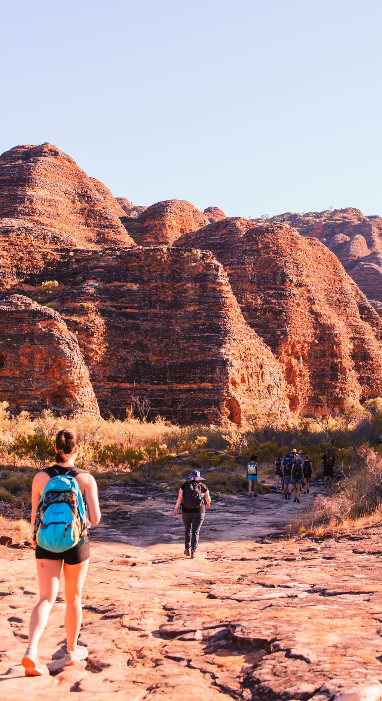
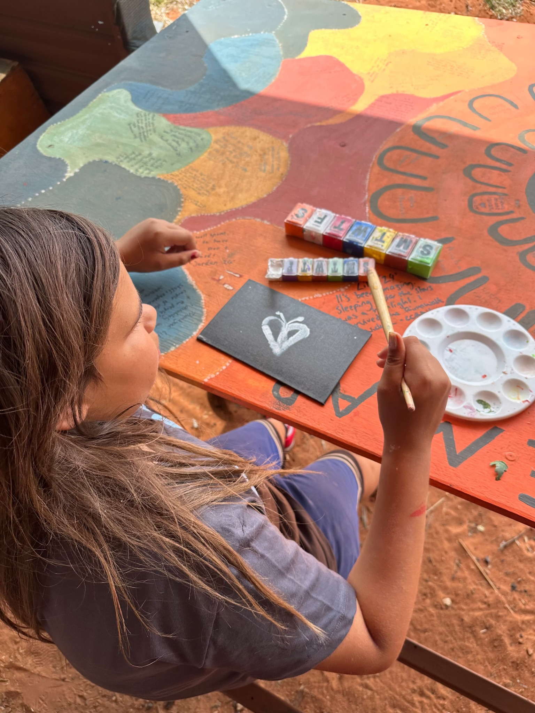

Unique and Diverse
Our excursions ensure that students have a unique educational experience, learning about ancient indigenous cultures while travelling through the diverse landscape of the Northern Territory's Red Centre.
Our Story
Over the years Reg has built many close relationships with Aboriginal Elders from various communities in the Territory. One example is at the community close to the Kings Canyon Resort called Lilla. Remote Tours have been running school excursion in the red centre that incorporate visits to Lilla and participating in community service work that can help make the communities self sustaining.
In return for their hard work the students get to interact directly with indigenous community members of Lilla and the Watarrka region, enabling them to not just observe, but experience the culture at a personal level.
Remote Tours is an educationally based, culturally aware tour company, with a strong emphasis on interaction with the Aboriginal people, mingled with fun, to ensure a trip you will never forget.
We are also proud to be chosen by the indigenous people of the land to help promote our program of bringing city children to experience and reconnect with their mother-land.


Why
We create educational, culturally aware and memorable experiences through local knowledge, community relationships and thoughtful tour design.
Our excursions ensure that students have a unique educational experience, learning about ancient indigenous cultures while travelling through the diverse landscape of the Northern Territory's Red Centre.
We offer the opportunity to stay with an authentic Aboriginal community, experiencing daily life as well as visiting the usual iconic attractions.
Our guides are highly experienced and reputable employees who share our passion and vision to educate students about Aboriginal culture. Our guides aren't just imparting academic knowledge, but also real life knowledge they themselves have learned as locals.
Remote Tours believes every Australian child should visit the heart of Australia, Uluru, the sacred red rock, and witness for themselves the real situation regarding Aboriginal communities. We find that most students have a mistaken perception of Aboriginal people often perpetuated by inexperience and the media. The new generation of Australian youth will see for themselves how today's indigenous people live and the challenges they face.
Everyone who works for Remote Tours has been a guide and we all know just how rushed tour itineraries are. Remote Tours have adopted a flexible and relaxed approach to touring, not just for visitors but also to look after our team. Customers can choose their own itinerary or Remote Tours will help you create one, leaving time to reflect, rest, explore places that other companies do not have the time to go.
A lot of attention is given to food and providing quality meals. We don't skimp or food quality just because you are camping. All our food is fresh and mostly comes from the supermarket like you would buy for your own home meals.